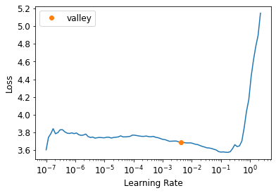

Notes on fastai Book Ch. 16
- Establishing a Baseline
- A Generic Optimizer
- Momentum
- RMSProp
- Adam
- Decoupled Weight Decay
- Callbacks
- References
#hide
# !pip install -Uqq fastbook
import fastbook
fastbook.setup_book()#hide
from fastbook import *import inspect
def print_source(obj):
for line in inspect.getsource(obj).split("\n"):
print(line)Establishing a Baseline
def get_data(url, presize, resize):
path = untar_data(url)
return DataBlock(
blocks=(ImageBlock, CategoryBlock), get_items=get_image_files,
splitter=GrandparentSplitter(valid_name='val'),
get_y=parent_label, item_tfms=Resize(presize),
batch_tfms=[*aug_transforms(min_scale=0.5, size=resize),
Normalize.from_stats(*imagenet_stats)],
).dataloaders(path, bs=128)URLs.IMAGENETTE_160'https://s3.amazonaws.com/fast-ai-imageclas/imagenette2-160.tgz'dls = get_data(URLs.IMAGENETTE_160, 160, 128)def get_learner(**kwargs):
return cnn_learner(dls, resnet34, pretrained=False,
metrics=accuracy, **kwargs).to_fp16()# Default fastai optimizer
learn = get_learner()
learn.fit_one_cycle(3, 0.003)| epoch | train_loss | valid_loss | accuracy | time |
|---|---|---|---|---|
| 0 | 2.597476 | 7.834398 | 0.205096 | 00:07 |
| 1 | 2.075519 | 2.908207 | 0.393121 | 00:06 |
| 2 | 1.739347 | 1.434073 | 0.544713 | 00:06 |
learn.opt_func<function fastai.optimizer.Adam(params, lr, mom=0.9, sqr_mom=0.99, eps=1e-05, wd=0.01, decouple_wd=True)># Use plain SGD for baseline
learn = get_learner(opt_func=SGD)learn.lr_find()SuggestedLRs(valley=0.004365158267319202)
# Disable momentum for baseline
learn.fit_one_cycle(3, 0.03, moms=(0,0,0))| epoch | train_loss | valid_loss | accuracy | time |
|---|---|---|---|---|
| 0 | 2.968830 | 2.996733 | 0.235159 | 00:06 |
| 1 | 2.414340 | 1.804736 | 0.403057 | 00:06 |
| 2 | 2.157545 | 1.676913 | 0.430318 | 00:06 |
Note: Plain SGD is training slower.
A Generic Optimizer
- need a flexible optimizer foundation to easily implement new improvements
- optimizer callbacks: small pieces of code that we can compose, mix, and match in an optimizer to build the optimizer step
Optimizerfastai.optimizer.Optimizerprint_source(Optimizer) class Optimizer(_BaseOptimizer):
"Base optimizer class for the fastai library, updating `params` with `cbs`"
_keep_on_clear = ['force_train', 'do_wd']
def __init__(self, params, cbs, train_bn=True, **defaults):
params = L(params)
self.cbs,self.state,self.train_bn = L(cbs),defaultdict(dict),train_bn
defaults = merge(*self.cbs.attrgot('defaults'), defaults)
self.param_lists = L(L(p) for p in params) if isinstance(params[0], (L,list)) else L([params])
self.hypers = L({} for _ in range_of(self.param_lists))
self.set_hypers(**defaults)
self.frozen_idx = 0
def zero_grad(self):
for p,*_ in self.all_params(with_grad=True):
p.grad.detach_()
p.grad.zero_()
def step(self):
for p,pg,state,hyper in self.all_params(with_grad=True):
for cb in self.cbs: state = _update(state, cb(p, **{**state, **hyper}))
self.state[p] = state
def clear_state(self):
for p,pg,state,hyper in self.all_params():
self.state[p] = {k: state[k] for k in self._keep_on_clear if k in state}
def state_dict(self):
state = [self.state[p] for p,*_ in self.all_params()]
return {'state': state, 'hypers': self.hypers}
def load_state_dict(self, sd):
assert len(sd["hypers"]) == len(self.param_lists)
assert len(sd["state"]) == sum([len(pg) for pg in self.param_lists])
self.hypers = sd['hypers']
self.state = {p: s for p,s in zip(self.all_params().itemgot(0), sd['state'])}# Custom optimizer callback that performs a single SGD step
# when Tensor.add_ in PyTorch is passed two parameters, they are multiplied together before the addition
def sgd_cb(p, lr, **kwargs): p.data.add_(-lr, p.grad.data)torch.add: \(out_{i} = input_{i} + alpha \times other_{i}\)
help(torch.add) Help on built-in function add:
add(...)
add(input, other, *, alpha=1, out=None) -> Tensor
Adds :attr:`other`, scaled by :attr:`alpha`, to :attr:`input`.
.. math::
\text{{out}}_i = \text{{input}}_i + \text{{alpha}} \times \text{{other}}_i
Supports :ref:`broadcasting to a common shape <broadcasting-semantics>`,
:ref:`type promotion <type-promotion-doc>`, and integer, float, and complex inputs.
Args:
input (Tensor): the input tensor.
other (Tensor or Number): the tensor or number to add to input.
Keyword arguments:
alpha (Number): the multiplier for :attr:`other`.
out (Tensor, optional): the output tensor.
Examples::
>>> a = torch.randn(4)
>>> a
tensor([ 0.0202, 1.0985, 1.3506, -0.6056])
>>> torch.add(a, 20)
tensor([ 20.0202, 21.0985, 21.3506, 19.3944])
>>> b = torch.randn(4)
>>> b
tensor([-0.9732, -0.3497, 0.6245, 0.4022])
>>> c = torch.randn(4, 1)
>>> c
tensor([[ 0.3743],
[-1.7724],
[-0.5811],
[-0.8017]])
>>> torch.add(b, c, alpha=10)
tensor([[ 2.7695, 3.3930, 4.3672, 4.1450],
[-18.6971, -18.0736, -17.0994, -17.3216],
[ -6.7845, -6.1610, -5.1868, -5.4090],
[ -8.9902, -8.3667, -7.3925, -7.6147]])opt_func = partial(Optimizer, cbs=[sgd_cb])learn = get_learner(opt_func=opt_func)
learn.fit(3, 0.03)| epoch | train_loss | valid_loss | accuracy | time |
|---|---|---|---|---|
| 0 | 2.582404 | 1.843338 | 0.379618 | 00:06 |
| 1 | 2.124360 | 1.591867 | 0.468280 | 00:06 |
| 2 | 1.824502 | 1.510853 | 0.498089 | 00:06 |
Momentum
- use a moving average, instead of only the current gradient
- used to skip over little bumps in the loss landscape
- higher momentum will skip over bigger bumps
- works particularly well if the loss function has narrow canyons that would cause vanilla SGD to bounce around
weight.avg = beta * weight.avg + (1-beta) * weight.grad
new_weight = weight - lr * weight.avg- beta: defines how much momentum to use
beta = 0: no momentum
- need to track the moving averages for each parameter in the model
Noisy Data for a Single Parameter with Different Levels of Momentum
# Get 100 evenly spaced input values over the interval [-4,4]
x = np.linspace(-4, 4, 100)
# Function to plot
y = 1 - (x/3) ** 2
# Add noise to both input and output
x1 = x + np.random.randn(100) * 0.1
y1 = y + np.random.randn(100) * 0.1
_,axs = plt.subplots(2,2, figsize=(12,8))
# List of beta values
betas = [0.5,0.7,0.9,0.99]
idx = x1.argsort()
for beta,ax in zip(betas, axs.flatten()):
ax.scatter(x1,y1)
avg,res = 0,[]
for i in idx:
avg = beta * avg + (1-beta) * y1[i]
res.append(avg)#/(1-beta**(i+1)))
ax.plot(x1[idx],np.array(res), color='red');
ax.set_title(f'beta={beta}')Note: A beta value that is too high causes the overall changes in the gradient to be ignored.
- A beta value of 0.9 is often used for SGD with Momentum
fit_one_cyclestarts with a beta value of 0.95, gradually adjusts to 0.85, then gradually moves back to 0.95
help(np.linspace) Help on function linspace in module numpy:
linspace(start, stop, num=50, endpoint=True, retstep=False, dtype=None, axis=0)
Return evenly spaced numbers over a specified interval.
Returns `num` evenly spaced samples, calculated over the
interval [`start`, `stop`].
The endpoint of the interval can optionally be excluded.
.. versionchanged:: 1.16.0
Non-scalar `start` and `stop` are now supported.
.. versionchanged:: 1.20.0
Values are rounded towards ``-inf`` instead of ``0`` when an
integer ``dtype`` is specified. The old behavior can
still be obtained with ``np.linspace(start, stop, num).astype(int)``
Parameters
----------
start : array_like
The starting value of the sequence.
stop : array_like
The end value of the sequence, unless `endpoint` is set to False.
In that case, the sequence consists of all but the last of ``num + 1``
evenly spaced samples, so that `stop` is excluded. Note that the step
size changes when `endpoint` is False.
num : int, optional
Number of samples to generate. Default is 50. Must be non-negative.
endpoint : bool, optional
If True, `stop` is the last sample. Otherwise, it is not included.
Default is True.
retstep : bool, optional
If True, return (`samples`, `step`), where `step` is the spacing
between samples.
dtype : dtype, optional
The type of the output array. If `dtype` is not given, the data type
is inferred from `start` and `stop`. The inferred dtype will never be
an integer; `float` is chosen even if the arguments would produce an
array of integers.
.. versionadded:: 1.9.0
axis : int, optional
The axis in the result to store the samples. Relevant only if start
or stop are array-like. By default (0), the samples will be along a
new axis inserted at the beginning. Use -1 to get an axis at the end.
.. versionadded:: 1.16.0
Returns
-------
samples : ndarray
There are `num` equally spaced samples in the closed interval
``[start, stop]`` or the half-open interval ``[start, stop)``
(depending on whether `endpoint` is True or False).
step : float, optional
Only returned if `retstep` is True
Size of spacing between samples.
​
See Also
--------
arange : Similar to `linspace`, but uses a step size (instead of the
number of samples).
geomspace : Similar to `linspace`, but with numbers spaced evenly on a log
scale (a geometric progression).
logspace : Similar to `geomspace`, but with the end points specified as
logarithms.
Examples
--------
>>> np.linspace(2.0, 3.0, num=5)
array([2. , 2.25, 2.5 , 2.75, 3. ])
>>> np.linspace(2.0, 3.0, num=5, endpoint=False)
array([2. , 2.2, 2.4, 2.6, 2.8])
>>> np.linspace(2.0, 3.0, num=5, retstep=True)
(array([2. , 2.25, 2.5 , 2.75, 3. ]), 0.25)
Graphical illustration:
>>> import matplotlib.pyplot as plt
>>> N = 8
>>> y = np.zeros(N)
>>> x1 = np.linspace(0, 10, N, endpoint=True)
>>> x2 = np.linspace(0, 10, N, endpoint=False)
>>> plt.plot(x1, y, 'o')
[<matplotlib.lines.Line2D object at 0x...>]
>>> plt.plot(x2, y + 0.5, 'o')
[<matplotlib.lines.Line2D object at 0x...>]
>>> plt.ylim([-0.5, 1])
(-0.5, 1)
>>> plt.show()# Custom callback to calculate the average gradient
def average_grad(p, mom, grad_avg=None, **kwargs):
# Set starting average to zero for all parameters
if grad_avg is None: grad_avg = torch.zeros_like(p.grad.data)
return {'grad_avg': grad_avg*mom + p.grad.data}# Custom callback that performs a single SGD with momentum step
def momentum_step(p, lr, grad_avg, **kwargs): p.data.add_(-lr, grad_avg)# Start training with a beta value of 0.9
opt_func = partial(Optimizer, cbs=[average_grad,momentum_step], mom=0.9)# Learner automatically schedules the momentum and learning rate
learn = get_learner(opt_func=opt_func)
learn.fit_one_cycle(3, 0.03)| epoch | train_loss | valid_loss | accuracy | time |
|---|---|---|---|---|
| 0 | 2.720397 | 1.938127 | 0.330446 | 00:06 |
| 1 | 2.461116 | 1.865412 | 0.390828 | 00:06 |
| 2 | 2.155982 | 1.645647 | 0.451720 | 00:06 |
Note: Still not getting great results
learn.recorder.plot_sched()RMSProp
- Introduced by Geoffrey Hinton in Overview of mini-batch gradient descent
- Divide the learning rate for a weight by a running average of the magnitudes of recent gradients for that weight
- Uses an adaptive learning rate
- each parameter gets its own learning rate controlled by a global learning rate
- Can speed up training by giving a higher learning rate to weights that need to change a lot and a lower learning rate to weights that are good enough
- Parameters whose gradients have been close to zero for a while will need a higher learning rate, because the loss is flat
- Parameters whose gradients have been erratic will need a lower learning rate to avoid divergence
- Use a moving average of the gradients squared
# If the moving average is low, the effective learning rate will be higher
w.square_avg = alpha * w.square_avg + (1-alpha) * (w.grad ** 2)
new_w = w - lr * w.grad / math.sqrt(w.square_avg + eps)eps(epsilon): added for numerial stability- default value is 1e-8
alpha: default value is usually 0.99
# Custom callback that calculated the moving average of the gradients squared
def average_sqr_grad(p, sqr_mom, sqr_avg=None, **kwargs):
# Set starting average to zero for all parameters
if sqr_avg is None: sqr_avg = torch.zeros_like(p.grad.data)
return {'sqr_avg': sqr_mom*sqr_avg + (1-sqr_mom)*p.grad.data**2}# Custom callback that perform a single rmsprop step
def rms_prop_step(p, lr, sqr_avg, eps, grad_avg=None, **kwargs):
denom = sqr_avg.sqrt().add_(eps)
p.data.addcdiv_(-lr, p.grad, denom)torch.addcdiv: \(\text{out}_i = \text{input}_i + \text{value} \times \frac{\text{tensor1}_i}{\text{tensor2}_i}\)
help(torch.addcdiv) Help on built-in function addcdiv:
addcdiv(...)
addcdiv(input, tensor1, tensor2, *, value=1, out=None) -> Tensor
Performs the element-wise division of :attr:`tensor1` by :attr:`tensor2`,
multiply the result by the scalar :attr:`value` and add it to :attr:`input`.
.. warning::
Integer division with addcdiv is no longer supported, and in a future
release addcdiv will perform a true division of tensor1 and tensor2.
The historic addcdiv behavior can be implemented as
(input + value * torch.trunc(tensor1 / tensor2)).to(input.dtype)
for integer inputs and as (input + value * tensor1 / tensor2) for float inputs.
The future addcdiv behavior is just the latter implementation:
(input + value * tensor1 / tensor2), for all dtypes.
.. math::
\text{out}_i = \text{input}_i + \text{value} \times \frac{\text{tensor1}_i}{\text{tensor2}_i}
​
The shapes of :attr:`input`, :attr:`tensor1`, and :attr:`tensor2` must be
:ref:`broadcastable <broadcasting-semantics>`.
For inputs of type `FloatTensor` or `DoubleTensor`, :attr:`value` must be
a real number, otherwise an integer.
Args:
input (Tensor): the tensor to be added
tensor1 (Tensor): the numerator tensor
tensor2 (Tensor): the denominator tensor
Keyword args:
value (Number, optional): multiplier for :math:`\text{tensor1} / \text{tensor2}`
out (Tensor, optional): the output tensor.
Example::
>>> t = torch.randn(1, 3)
>>> t1 = torch.randn(3, 1)
>>> t2 = torch.randn(1, 3)
>>> torch.addcdiv(t, t1, t2, value=0.1)
tensor([[-0.2312, -3.6496, 0.1312],
[-1.0428, 3.4292, -0.1030],
[-0.5369, -0.9829, 0.0430]])opt_func = partial(Optimizer, cbs=[average_sqr_grad,rms_prop_step], sqr_mom=0.99, eps=1e-7)learn = get_learner(opt_func=opt_func)
learn.fit_one_cycle(3, 0.003)| epoch | train_loss | valid_loss | accuracy | time |
|---|---|---|---|---|
| 0 | 2.763567 | 2.188202 | 0.278981 | 00:07 |
| 1 | 2.208868 | 1.775339 | 0.385223 | 00:07 |
| 2 | 1.771404 | 1.440212 | 0.531720 | 00:07 |
Note: Higher final accuracy
Adam
- Mixes the ideas of SGD with momentum and RMSProp together
- Uses the moving average of the gradients as a direction and divides by the square root of the moving average of the gradients squared to give an adaptive learnig rate to each parameter
- takes the unbiased moving average
w.avg = beta * w.avg + (1-beta) * w.grad
unbias_avg = w.avg / (1 - beta**(i+1))i: the i-th iteration, starting at 0 (1 - beta**(i+1): makes sure the unbiased average look more like the gradients at the beginning
- full update step
w.avg = beta * w.avg + (1-beta) * w.grad
unbias_avg = w.avg / (1 - beta**(i+1))
w.sqr_avg = beta2 * w.sqr_avg + (1-beta2) * (w.grad ** 2)
new_w = w - lr * unbias_avg / sqrt(w.sqr_avg + eps)- fastai default values
- eps: 1e-5
- higher eps value limits the maximum value of the adjusted learning rate
- beta1: 0.9
- beta2: 0.99
- set with
momsinfit_one_cycle
- set with
- eps: 1e-5
Adam<function fastai.optimizer.Adam(params, lr, mom=0.9, sqr_mom=0.99, eps=1e-05, wd=0.01, decouple_wd=True)>print_source(Adam)def Adam(params, lr, mom=0.9, sqr_mom=0.99, eps=1e-5, wd=0.01, decouple_wd=True):
"A `Optimizer` for Adam with `lr`, `mom`, `sqr_mom`, `eps` and `params`"
cbs = [weight_decay] if decouple_wd else [l2_reg]
cbs += [partial(average_grad, dampening=True), average_sqr_grad, step_stat, adam_step]
return Optimizer(params, cbs, lr=lr, mom=mom, sqr_mom=sqr_mom, eps=eps, wd=wd)print_source(step_stat)def step_stat(p, step=0, **kwargs):
"Register the number of steps done in `state` for `p`"
step += 1
return {'step' : step}print_source(adam_step)def adam_step(p, lr, mom, step, sqr_mom, grad_avg, sqr_avg, eps, **kwargs):
"Step for Adam with `lr` on `p`"
debias1 = debias(mom, 1-mom, step)
debias2 = debias(sqr_mom, 1-sqr_mom, step)
p.data.addcdiv_(grad_avg, (sqr_avg/debias2).sqrt() + eps, value = -lr / debias1)
return pprint_source(debias)def debias(mom, damp, step): return damp * (1 - mom**step) / (1-mom)Decoupled Weight Decay
- Decoupled Weight Decay Regularization
- each weight is decayed by a factor of
lr * wd
new_weight = weight - lr*weight.grad - lr*wd*weight- also called L2 regularization
print_source(weight_decay)def weight_decay(p, lr, wd, do_wd=True, **kwargs):
"Weight decay as decaying `p` with `lr*wd`"
if do_wd and wd!=0: p.data.mul_(1 - lr*wd)print_source(l2_reg)def l2_reg(p, lr, wd, do_wd=True, **kwargs):
"L2 regularization as adding `wd*p` to `p.grad`"
if do_wd and wd!=0: p.grad.data.add_(p.data, alpha=wd)Callbacks
- Allow users to insert code at any part of the training loop in a consistent, well-defined way
callback: a piece of code you write and inject into another piece of code at a predefined point- The typical approach to customizing the training loop by making a copy and inserting changes is problematic
- hundreds of changes can be made to a training loop, meaning their are billions of possible permutations
Basic Training Loop
for xb,yb in dl:
loss = loss_func(model(xb),yb)
loss.backward()
opt.step()
opt.zero_grad()Learner._do_one_batch<function fastai.learner.Learner._do_one_batch(self)>print_source(Learner._do_one_batch) def _do_one_batch(self):
self.pred = self.model(*self.xb)
self('after_pred')
if len(self.yb):
self.loss_grad = self.loss_func(self.pred, *self.yb)
self.loss = self.loss_grad.clone()
self('after_loss')
if not self.training or not len(self.yb): return
self('before_backward')
self.loss_grad.backward()
self._with_events(self.opt.step, 'step', CancelStepException)
self.opt.zero_grad()Note: The self('') calls are where the callbacks are called. * The callback will receive the entire state of training and can modify it
Creating a Callback
after_create: called after the Learner is createdbefore_fit: called before starting training or inference, ideal for initial setup.before_epoch: called at the beginning of each epoch, useful for any behavior you need to reset at each epoch.before_train: called at the beginning of the training part of an epoch.before_batch: called at the beginning of each batch, just after drawing said batch. It can be used to do any setup necessary for the batch (like hyper-parameter scheduling) or to change the input/target before it goes in the model (change of the input with techniques like mixup for instance).after_pred: called after computing the output of the model on the batch. It can be used to change that output before it’s fed to the loss.after_loss: called after the loss has been computed, but before the backward pass. It can be used to add any penalty to the loss (AR or TAR in RNN training for instance).before_backward: called after the loss has been computed, but only in training mode (i.e. when the backward pass will be used)before_step: called after the backward pass, but before the update of the parameters. It can be used to do any change to the gradients before said update (gradient clipping for instance).after_step: called after the step and before the gradients are zeroed.after_batch: called at the end of a batch, for any clean-up before the next one.after_train: called at the end of the training phase of an epoch.before_validate: called at the beginning of the validation phase of an epoch, useful for any setup needed specifically for validation.after_validate: called at the end of the validation part of an epoch.after_epoch: called at the end of an epoch, for any clean-up before the next one.after_fit: called at the end of training, for final clean-up.
# List of available events
help(event) Help on class event in module fastcore.basics:
class event(builtins.object)
| event(*args, **kwargs)
|
| All possible events as attributes to get tab-completion and typo-proofing
|
| Methods defined here:
|
| __eq__ = _eq(self, b)
|
| __init__ = _init(self, *args, **kwargs)
|
| __repr__ = _f(self)
|
| ----------------------------------------------------------------------
| Data descriptors defined here:
|
| __dict__
| dictionary for instance variables (if defined)
|
| __weakref__
| list of weak references to the object (if defined)
|
| ----------------------------------------------------------------------
| Data and other attributes defined here:
|
| __hash__ = None
|
| after_batch = 'after_batch'
|
| after_cancel_batch = 'after_cancel_batch'
|
| after_cancel_epoch = 'after_cancel_epoch'
|
| after_cancel_fit = 'after_cancel_fit'
|
| after_cancel_step = 'after_cancel_step'
|
| after_cancel_train = 'after_cancel_train'
|
| after_cancel_validate = 'after_cancel_validate'
|
| after_create = 'after_create'
|
| after_epoch = 'after_epoch'
|
| after_fit = 'after_fit'
|
| after_loss = 'after_loss'
|
| after_pred = 'after_pred'
|
| after_step = 'after_step'
|
| after_train = 'after_train'
|
| after_validate = 'after_validate'
|
| before_backward = 'before_backward'
|
| before_batch = 'before_batch'
|
| before_epoch = 'before_epoch'
|
| before_fit = 'before_fit'
|
| before_step = 'before_step'
|
| before_train = 'before_train'
|
| before_validate = 'before_validate'ModelResetter, print_source(ModelResetter)@docs
class ModelResetter(Callback):
"`Callback` that resets the model at each validation/training step"
def before_train(self): self.model.reset()
def before_validate(self): self.model.reset()
def after_fit(self): self.model.reset()
_docs = dict(before_train="Reset the model before training",
before_validate="Reset the model before validation",
after_fit="Reset the model after fitting")(fastai.callback.rnn.ModelResetter, None)class ModelResetter(Callback):
def begin_train(self): self.model.reset()
def begin_validate(self): self.model.reset()RNNRegularizer, print_source(RNNRegularizer)class RNNRegularizer(Callback):
"Add AR and TAR regularization"
order,run_valid = RNNCallback.order+1,False
def __init__(self, alpha=0., beta=0.): store_attr()
def after_loss(self):
if not self.training: return
if self.alpha: self.learn.loss_grad += self.alpha * self.rnn.out.float().pow(2).mean()
if self.beta:
h = self.rnn.raw_out
if len(h)>1: self.learn.loss_grad += self.beta * (h[:,1:] - h[:,:-1]).float().pow(2).mean()(fastai.callback.rnn.RNNRegularizer, None)class RNNRegularizer(Callback):
def __init__(self, alpha=0., beta=0.): self.alpha,self.beta = alpha,beta
def after_pred(self):
self.raw_out,self.out = self.pred[1],self.pred[2]
self.learn.pred = self.pred[0]
def after_loss(self):
if not self.training: return
if self.alpha != 0.:
self.learn.loss += self.alpha * self.out[-1].float().pow(2).mean()
if self.beta != 0.:
h = self.raw_out[-1]
if len(h)>1:
self.learn.loss += self.beta * (h[:,1:] - h[:,:-1]
).float().pow(2).mean()Note: A callback will always try to get an attribute it does not have inside the Learner associated with it.
Learner attributes available to callbacks
model: the model used for training/validationdls: the underlying DataLoadersloss_func: the loss function usedopt: the optimizer used to update the model parametersopt_func: the function used to create the optimizercbs: the list containing all Callbacksdl: current DataLoader used for iterationx/xb: last input drawn from self.dl (potentially modified by callbacks). xb is always a tuple (potentially with one element) and x is detuplified. You can only assign to xb.y/yb: last target drawn from self.dl (potentially modified by callbacks). yb is always a tuple (potentially with one element) and y is detuplified. You can only assign to yb.pred: last predictions from self.model (potentially modified by callbacks)loss_grad: last computed loss (potentially modified by callbacks)loss: clone of loss_grad used for loggingn_epoch: the number of epochs in this trainingn_iter: the number of iterations in the current self.dlepoch: the current epoch index (from 0 to n_epoch-1)iter: the current iteration index in self.dl (from 0 to n_iter-1)
Callback Ordering and Exceptions
- A callback sometimes need to tell fastai to skip over a batch or an epoch, or stop training all together
TerminateOnNaNCallback, print_source(TerminateOnNaNCallback)class TerminateOnNaNCallback(Callback):
"A `Callback` that terminates training if loss is NaN."
order=-9
def after_batch(self):
"Test if `last_loss` is NaN and interrupts training."
if torch.isinf(self.loss) or torch.isnan(self.loss): raise CancelFitException(fastai.callback.tracker.TerminateOnNaNCallback, None)class TerminateOnNaNCallback(Callback):
run_before=Recorder
def after_batch(self):
if torch.isinf(self.loss) or torch.isnan(self.loss):
raise CancelFitExceptionfrom fastai.callback.core import _ex_docscs_ex_docs{'CancelBatchException': 'Skip the rest of this batch and go to `after_batch`',
'CancelTrainException': 'Skip the rest of the training part of the epoch and go to `after_train`',
'CancelValidException': 'Skip the rest of the validation part of the epoch and go to `after_validate`',
'CancelEpochException': 'Skip the rest of this epoch and go to `after_epoch`',
'CancelStepException': 'Skip stepping the optimizer',
'CancelFitException': 'Interrupts training and go to `after_fit`'}Note: Can Detect one the above exceptions and execute code right after * after_cancel_batch: reached immediately after a CancelBatchException before proceeding to after_batch * after_cancel_train: reached immediately after a CancelTrainException before proceeding to after_epoch * after_cancel_valid: reached immediately after a CancelValidException before proceeding to after_epoch * after_cancel_epoch: reached immediately after a CancelEpochException before proceeding to after_epoch * after_cancel_fit: reached immediately after a CancelFitException before proceeding to after_fit
References
Previous: Notes on fastai Book Ch. 15